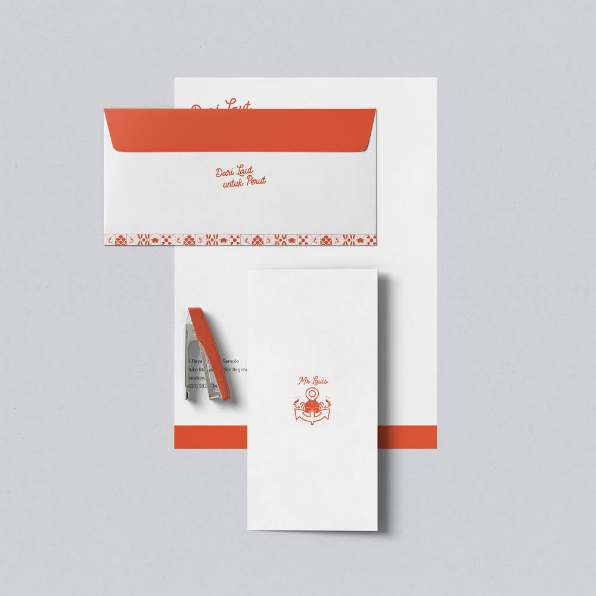
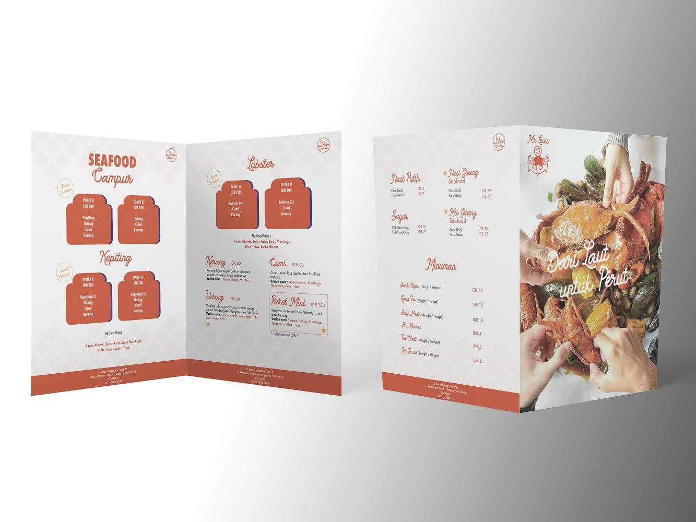
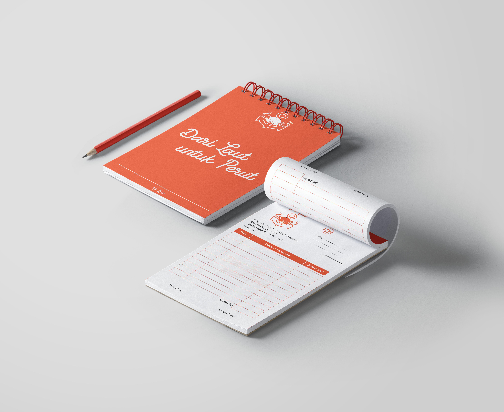
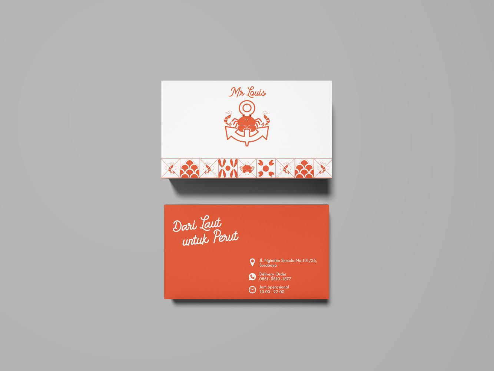
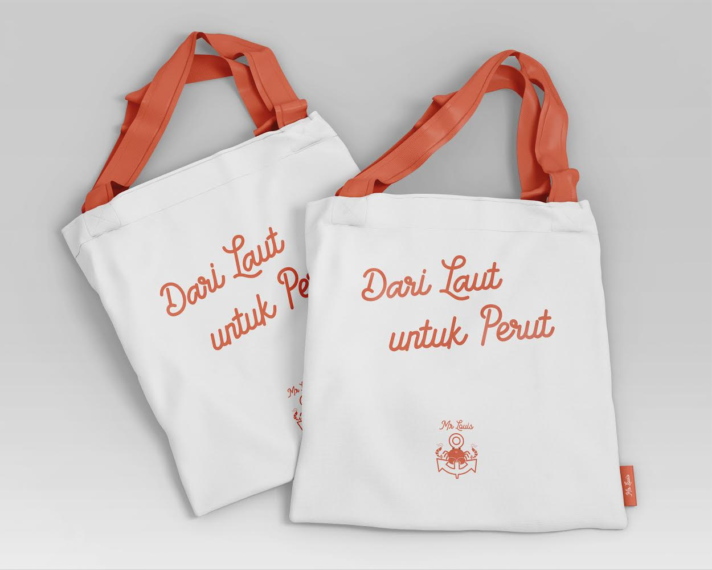
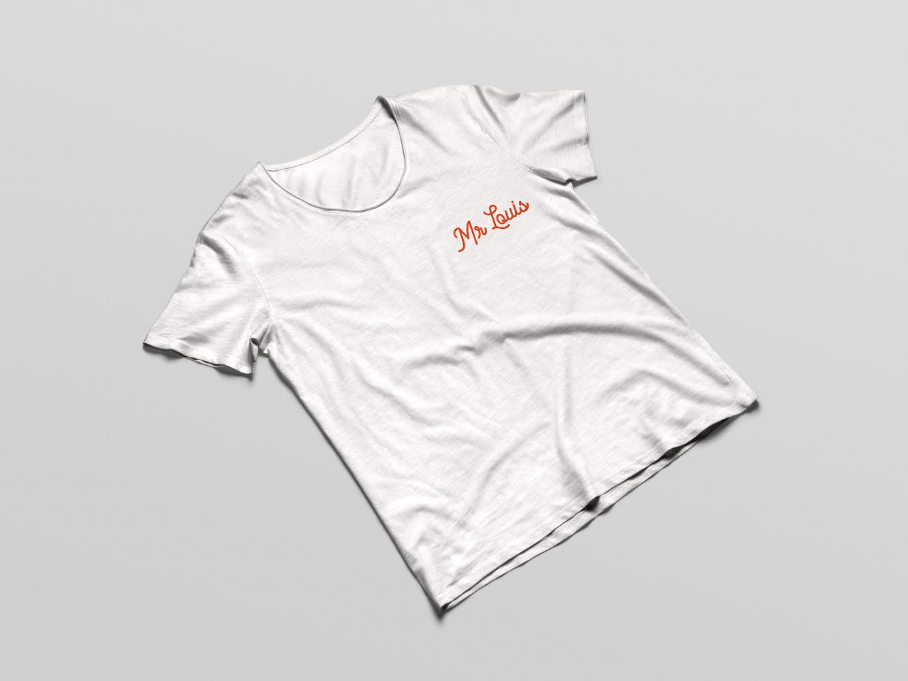

MR LOUIS
Merupakan tempat makan seafood yang berada di Ruko Manyar Garden No.101 dan sudah berdiri sejak bulan Juli 2018.
TARGET AUDIENCE
| Gender | : Pria & Wanita |
| Usia | : 18-70 tahun |
| Pekerjaan | : Anak kuliahan dan pekerja kantoran |
LOGO VALUE
Logo Mr Louis berasal dari 3 kata kunci yaitu, kepiting, jangkar dan udang. Untuk ikon Mr Louis dipilih kepiting dan udang karena merupakan menu favorit di Mr Louis.
Terdapat dua udang yang berada di samping kanan dan kiri kepiting melambangkan keseimbangan rasa yang dibuat oleh Mr Louis.
Jangkar pada logo dengan ukuran cukup besar melambangkan tanggung jawab Mr Louis terhadap konsumer.